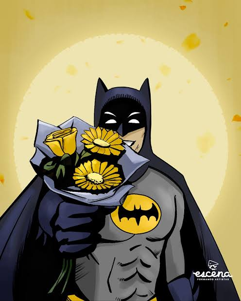

UM PEDIDO SINCERO
DESCULPA
Uma palavra, mil maneiras de dizer. Escolha uma categoria e encontre a desculpa certa.

Até o Cavaleiro das Trevas sabe quando é hora de pedir desculpas.
Todas
Simples
Sinceras
Carinhosas
Dramáticas
Engraçadas
0 desculpas
✨ Escolher uma aleatória